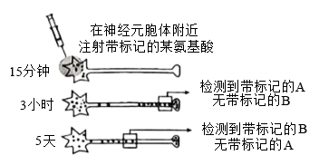
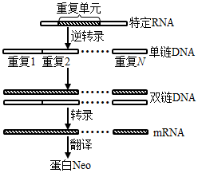
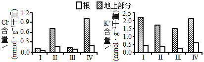
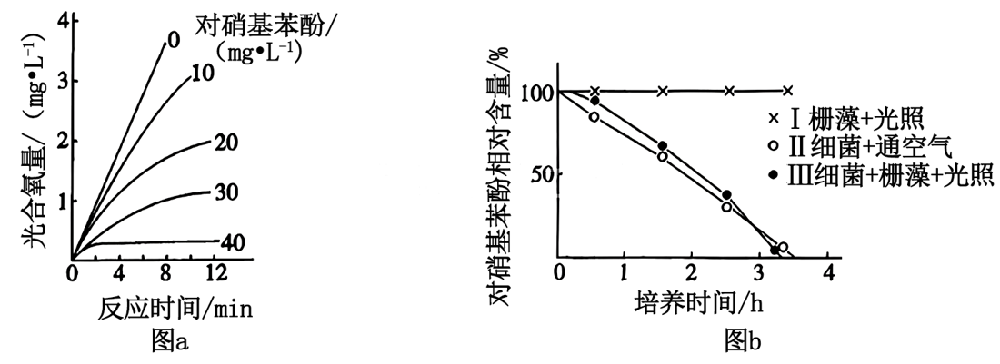
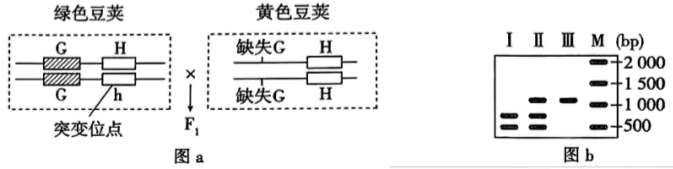
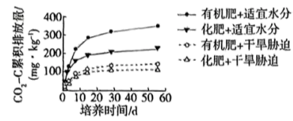
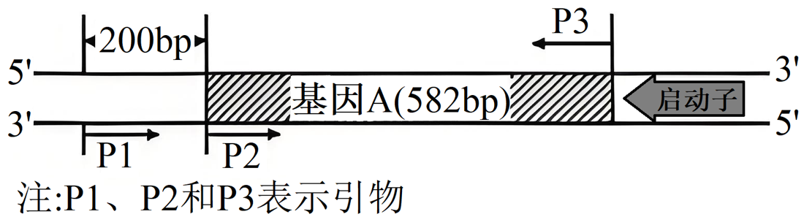

第 1 题
T细胞
题目与已知条件
T细胞是重要的免疫细胞。下列叙述错误的是（ ）
所用高中知识
淋巴细胞的起源与成熟场所；细胞免疫。
读题与思路
T细胞在胸腺成熟。
分步解析
- T细胞由骨髓造血干细胞分化而来，迁移到胸腺中成熟，A错误。
- 树突状细胞是APC，可将抗原呈递给辅助性T细胞，B正确；辅助性T细胞分泌细胞因子促进细胞毒性T细胞活化，C正确；淋巴结等免疫器官是T细胞集中分布的场所，D正确。
答案
A
检查与易错点
B细胞在骨髓成熟，T细胞在胸腺成熟。
本题来源：doc-hunan-q
2025年湖南省普通高中学业水平选择性考试 生物学
21 题 · 全文材料 · 完整题干 · 独立推导
湖南2025年生物学为本省自主命题的湖南卷，共21题：单选1—12（每题2分）、不定项13—16（每题4分）、非选择题17—21（共60分），满分100分。本册替换此前误收的全国卷理综生物部分。
题文、表格与图依据用户所附《2025年高考真题——生物（湖南卷）Word版无答案》逐题转录；无答案版在第21题（2）处截断，该小问据同卷含解析版补全，个别录入错字（如“分离成乙酸”→“分解成乙酸”）已按语义更正。全部答案独立推导后与含解析版交叉核对：选择题中第14题参考答案作C，其解析称“基因H正常的O型血红细胞膜上无A、B抗原……不会发生凝集”，忽略了正常O型红细胞表面富含H抗原、而H缺失者血清含抗H抗体，二者混合必然凝集，D项表述同样错误，故本页独立推导答案为CD；其余选择题全部一致；第19题（4）第二空参考答案作“次生演替”，与题句“为＿＿的形成创造条件”搭配不顺，本页给出独立推导答案并注明参考答案。
阅读材料全文
2025年湖南省普通高中学业水平选择性考试 生物学
一、选择题：本题共12小题，每小题2分，共24分。在每小题给出的四个选项中，只有一项是符合题目要求的。
相关题目：第 1 题 · 第 2 题 · 第 3 题 · 第 4 题 · 第 5 题 · 第 6 题 · 第 7 题 · 第 8 题 · 第 9 题 · 第 10 题 · 第 11 题 · 第 12 题
第 1 题
T细胞是重要的免疫细胞。下列叙述错误的是（ ）
淋巴细胞的起源与成熟场所；细胞免疫。
T细胞在胸腺成熟。
A
B细胞在骨髓成熟，T细胞在胸腺成熟。
本题来源：doc-hunan-q
第 2 题
用替代的实验材料或者试剂开展下列实验，不能达成实验目的的是（ ）
| 选项 | 实验内容 | 替代措施 |
|---|---|---|
| A | 用高倍显微镜观察叶绿体 | 用“菠菜叶”替代“藓类叶片” |
| B | DNA的粗提取与鉴定 | 用“猪成熟红细胞”替代“猪肝细胞” |
| C | 观察根尖分生区组织细胞的有丝分裂 | 用“醋酸洋红液”替代“甲紫溶液” |
| D | 比较过氧化氢在不同条件下的分解 | 用“过氧化氢酶溶液”替代“肝脏研磨液” |
教材实验的材料选择。
哺乳动物成熟红细胞无细胞核。
B
鸡血细胞可用于DNA提取，猪（哺乳动物）成熟红细胞不行。
本题来源：doc-hunan-q
第 3 题
蛋白R功能缺失与人血液低胆固醇水平相关。蛋白R是肝细胞膜上的受体，参与去唾液酸糖蛋白的胞吞和降解，从而调节胆固醇代谢。下列叙述错误的是（ ）
胞吞；膜的流动性；溶酶体。
题干：蛋白R功能缺失→血液胆固醇低。
C
注意题干给出的相关方向：R功能缺失对应低胆固醇。
本题来源：doc-hunan-q
第 4 题
单一使用干扰素-γ治疗肿瘤效果有限。降低线粒体蛋白V合成，不影响癌细胞凋亡，但同时加入干扰素-γ能破坏线粒体膜结构，促进癌细胞凋亡。下列叙述错误的是（ ）
细胞凋亡；信息分析。
降低蛋白V+干扰素-γ→促进凋亡。
D
“单独降低V不影响凋亡”不等于“降低V对治疗无作用”。
本题来源：doc-hunan-q
第 5 题
采集果园土壤进行微生物分离或计数。下列叙述正确的是（ ）
微生物的分离与计数；选择培养基；醋酸菌的代谢。
逐项判断。
B
选择培养基中不能有其他氮源。
本题来源：doc-hunan-q
第 6 题
酸碱平衡是维持人体正常生命活动的必要条件之一。下列叙述正确的是（ ）
缓冲对；内环境的范围；无氧呼吸产物。
逐项判断。
B
消化道、呼吸道等与外界相通的腔道不属于内环境。
本题来源：doc-hunan-q
第 7 题
机体可通过信息分子协调各组织器官活动。下列叙述正确的是（ ）
激素功能；自主神经系统；分级调节。
逐项对照教材。
A
促××激素来自垂体，促××激素释放激素来自下丘脑。
本题来源：doc-hunan-q
第 8 题
为调查某自然保护区动物资源现状，研究人员利用红外触发相机记录到多种动物，其中豹猫、猪獾在海拔分布上重叠度较高。下列叙述错误的是（ ）
就地保护；生态位；种群数量调查；密度制约因素。
生态位包括空间、食物、天敌、与其他物种的关系等多方面。
B
生态位重叠≠生态位相同。
本题来源：doc-hunan-q
第 9 题
基因W编码的蛋白W能直接抑制核基因P和M转录起始。P和M可分别提高水稻抗虫性和产量。下列叙述错误的是（ ）
转录调控；信息分析。
W抑制P、M转录→W多则抗虫性、产量降低。
C
W是抑制因子，增加W只会进一步降低P、M的表达。
本题来源：doc-hunan-q
第 10 题
顺向轴突运输分快速轴突运输（主要运输跨膜蛋白L）和慢速轴突运输（主要运输细胞骨架蛋白）两种，都以移动、停滞反复交替的方式（移动时速度无差异）向轴突末梢运输物质。用带标记的某氨基酸（合成蛋白A和B所必需）分析蛋白A和B的轴突运输方式，实验如图。下列叙述正确的是（ ）

物质跨膜运输；信息题分析。
3小时在末梢检测到A，5天才检测到B：A为快速运输，B为慢速运输。
D
“移动时速度无差异”是推出停滞时间不同的关键条件。
本题来源：doc-hunan-q
第 11 题
被噬菌体侵染时，某细菌以一特定RNA片段为重复单元，逆转录成串联重复DNA，再指导合成含多个串联重复肽段的蛋白Neo，如图所示。该蛋白能抑制细菌生长，从而阻止噬菌体利用细胞资源。下列叙述错误的是（ ）

噬菌体侵染；转录模板链；翻译终止。
一个基因转录时只以一条链为模板。
C
两条链都可能作模板，但同一个基因转录时只用其中一条。
本题来源：doc-hunan-q
第 12 题
在常温（20 ℃）、长日照条件下栽培某油菜品种，幼苗生长至4~5叶时，将部分植株置于低温（5 ℃）处理6周后，立即进行嫁接。然后将所有植株常温栽培。不同处理植株茎尖中赤霉素含量（ng·g⁻¹鲜重）及开花情况如表所示。下列叙述正确的是（ ）
| 低温处理结束后（天） | 检测指标 | 常温处理植株 | 低温处理植株 | 常温处理接穗／常温处理砧木 | 常温处理接穗／低温处理砧木 |
|---|---|---|---|---|---|
| 0 | 赤霉素 | 90.2 | 215.3 | / | / |
| 15 | 赤霉素 | 126.4 | 632.0 | 113.8 | 582.0 |
| 50 | 开花情况 | 不开花 | 开花 | 不开花 | 开花 |
春化作用；激素作用特点。
春化作用感受低温的部位是茎尖（分生组织）等正在分裂的细胞，成熟叶片不能感受。
C
嫁接实验说明经低温处理的砧木可产生可传递的开花信号，但低温处理的是整株（含茎尖），并不意味着成熟叶片能感受低温。
本题来源：doc-hunan-q
阅读材料全文
二、选择题：本题共4小题，每小题4分，共16分。在每小题给出的四个选项中，有一项或多项符合题目要求。全部选对的得4分，选对但不全的得2分，有选错的得0分。
第 13 题
某人擅自在一湖泊中“放生”大量鲶鱼。短期内鲶鱼大量死亡，导致水质恶化，造成生态资源损失，此人被判承担相关责任。下列叙述正确的是（ ）
能量流动；反馈调节；生态系统恢复。
死鱼腐败→耗氧、水质恶化→更多鱼死亡。
ABD
使偏离进一步加剧的是正反馈。
本题来源：doc-hunan-q
第 14 题
红细胞凝集的本质是抗原—抗体反应。ABO血型分型依据如表。A和B抗原都在H抗原的基础上形成，基因H决定H抗原的形成，基因H缺失者血清中有抗A、抗B和抗H抗体。下列叙述错误的是（ ）
| 血型 | 红细胞膜上的抗原 | 血清中的抗体 |
|---|---|---|
| A | A | 抗B |
| B | B | 抗A |
| AB | A和B | 抗A、抗B均无 |
| O | A、B均无 | 抗A、抗B |
抗原—抗体反应；血型判断。
凝集发生在红细胞抗原与对应抗体相遇时。
CD
正常O型血红细胞虽无A、B抗原，但含有大量H抗原（这正是H缺失者——孟买型——输血时只能接受同型血的原因）。只选C会漏掉D：H缺失者血清中的抗H抗体会与正常O型红细胞上的H抗原反应。
本题来源：doc-hunan-q
第 15 题
Cl属于植物的微量元素。分别用渗透压相同、Na⁺或Cl⁻物质的量浓度也相同的三种溶液处理某荒漠植物（不考虑溶液中其他离子的影响）。5天后，与对照组（Ⅰ）相比，Ⅱ和Ⅲ组光合速率降低，而Ⅳ组无显著差异；各组植株的地上部分和根中Cl⁻、K⁺含量如图所示。下列叙述错误的是（ ）

注：Ⅰ．对照（正常栽培）；Ⅱ．NaCl溶液；Ⅲ．Na⁺浓度与Ⅱ中相同、无Cl⁻的溶液；Ⅳ．Cl⁻浓度与Ⅱ中相同、无Na⁺的溶液
液泡的功能；离子运输；对照实验分析。
Ⅱ与Ⅳ的Cl⁻浓度相同，但地上部分K⁺不同。
B
比较时要找只有一个变量不同的两组。
本题来源：doc-hunan-q
第 16 题
已知甲、乙家系的耳聋分别由基因E、F突变导致；丙家系耳聋由线粒体基因G突变为g所致，部分个体携带基因g但听力正常。下列叙述错误的是（ ）
遗传病的类型；细胞质遗传的阈值效应。
逐项判断。
BD
不同家系由不同的单个基因致病，仍属单基因遗传病（遗传异质性），不是多基因遗传病。
本题来源：doc-hunan-q
阅读材料全文
三、非选择题：本题共5小题，共60分。
第 17 题
对硝基苯酚可用于生产某些农药和染料，其化学性质稳定。研究发现，某细菌不能在无氧条件下生长，在适宜条件下能降解和利用对硝基苯酚，并释放CO₂。在Burk无机培养基和光照条件下，培养某栅藻（真核生物）的过程中，对硝基苯酚含量与栅藻光合放氧量的关系如图a。为进一步分析栅藻与细菌共培养条件下对硝基苯酚（40 mg·L⁻¹）的降解情况，开展了Ⅰ、Ⅱ和Ⅲ组对比实验，结果如图b。回答下列问题：

（1）栅藻的光合放氧反应部位是＿＿＿＿（填细胞器名称）。图a结果表明，对硝基苯酚＿＿＿＿栅藻的光合放氧反应。
（2）细菌在利用对硝基苯酚时，限制因子是＿＿＿＿。
（3）若Ⅰ中对硝基苯酚含量为20 mg·L⁻¹，培养10 min后，推测该培养液pH会＿＿＿＿，培养液中对硝基苯酚相对含量＿＿＿＿。
（4）细菌与栅藻通过原始合作，可净化被对硝基苯酚污染的水体，理由是＿＿＿＿。
光反应场所；限制因子；光合作用对pH的影响；种间关系。
图a：对硝基苯酚浓度越高，放氧越少；图b：只有栅藻时不降解，细菌需氧气。
（1）叶绿体；抑制 （2）氧气（O₂） （3）升高；基本不变 （4）栅藻光合作用释放O₂为细菌提供有氧环境，细菌降解对硝基苯酚并释放CO₂供栅藻进行光合作用
原始合作双方都受益，但分开后也能独立生活。
本题来源：doc-hunan-q
第 18 题
未成熟豌豆豆荚的绿色和黄色是一对相对性状，科研人员揭示了该相对性状的部分遗传机制。回答下列问题：
（1）纯合绿色豆荚植株与纯合黄色豆荚植株杂交，F₁只有一种表型。F₁自交得到的F₂中，绿色和黄色豆荚植株数量分别为297株和105株，则显性性状为＿＿＿＿。
（2）进一步分析发现：相对于绿色豆荚植株，黄色豆荚植株中基因H（编码叶绿素合成酶）的上游缺失非编码序列G。为探究G和下游H的关系，研究人员拟将某绿色豆荚植株的基因H突变为h（突变位点如图a所示，h编码的蛋白无功能），然后将获得的Hh植株与黄色豆荚植株杂交，思路如图a：

①为筛选Hh植株，根据突变位点两侧序列设计一对引物提取待测植株的DNA进行PCR。若扩增产物电泳结果全为预测的1125 bp，则基因H可能未发生突变，或发生了碱基对的＿＿＿＿；若H的扩增产物能被酶切为699 bp和426 bp的片段，而h的酶切位点丧失，则图b（扩增产物酶切后电泳结果）中的＿＿＿＿（填“Ⅰ”“Ⅱ”或“Ⅲ”）对应的是Hh植株。
②若图a的F₁中绿色豆荚∶黄色豆荚=1∶1，则F₁中黄色豆荚植株的基因型为＿＿＿＿[书写以图a中亲本黄色豆荚植株的基因型（△G+H）/（△G+H）为例，其中“△G”表示缺失G]。据此推测F₁中黄色豆荚植株产生的遗传分子机制是＿＿＿＿。
③若图a的F₁中两种基因型植株的数量无差异，但豆荚全为绿色，则说明＿＿＿＿。
分离定律；基因突变类型；PCR与酶切电泳；顺式调控。
297∶105≈3∶1，绿色为显性；G为H上游的调控序列。
（1）绿色 （2）①替换；Ⅱ ②(G+h)/(△G+H)；黄色亲本来源的染色体上缺失G序列，导致其基因H表达量降低（或不表达），而另一条染色体上的h无功能，叶绿素合成不足，豆荚表现为黄色 ③G序列对H基因的表达没有影响（或影响很小）
G与H在同一条染色体上（顺式）起作用，书写基因型时要按染色体分开写。
本题来源：doc-hunan-q
第 19 题
为探究施肥方式和土壤水分对微生物利用秸秆中碳的影响，采集分别用有机肥和含等量养分的化肥处理的表层土壤，再添加等量玉米秸秆，在适宜水分或干旱胁迫条件下培养。源于秸秆的CO₂-C（表示CO₂中的C）排放结果如图所示。回答下列问题：

（1）碳在生物群落内部传递的形式是＿＿＿＿。碳循环在生命系统结构层次的＿＿＿＿中完成，体现了全球性。
（2）追踪秸秆中碳的去向可采用＿＿＿＿法。
（3）无论在适宜水分还是干旱胁迫条件下，施用＿＿＿＿（填“化肥”或“有机肥”）更能促进秸秆中有机物的氧化分解。
（4）秸秆用于沼气工程既改善了生态环境，又提高了社会和经济效益，体现了生态工程的＿＿＿＿原理。秸秆还可在沙漠中用于防风固沙，使土壤颗粒和有机物逐渐增多，为＿＿＿＿的形成创造条件，有利于植被形成，逐渐提高生物多样性。
碳循环；同位素标记法；生态工程原理；群落演替。
图中两种水分条件下有机肥组CO₂-C累积排放量都高于化肥组。
（1）含碳有机物；生物圈 （2）同位素标记 （3）有机肥 （4）整体；土壤（参考答案作“次生演替”）
“整体”原理强调自然—经济—社会的整体效益；“协调”原理强调生物与环境相适应。
本题来源：doc-hunan-q
第 20 题
气味分子与小鼠嗅细胞膜上特定受体结合，激活嗅细胞，嗅觉神经通路兴奋，产生嗅觉。激活小鼠LDT脑区细胞，奖赏神经通路兴奋，可使其愉快；而激活LHb脑区细胞，惩罚神经通路兴奋，可使其痛苦。实验小鼠的嗅细胞、LDT和LHb脑区细胞可被特殊光源激活。A和C是两种气味完全不同的物品，小鼠嗅细胞M、嗅细胞X分别识别A、C中的气味分子。研究人员通过以下实验探讨脑的某些高级功能，实验如表。回答下列问题：
| 组别 | 足部反复电击 | 光刺激嗅细胞M | 光刺激LDT | 光刺激LHb | 处理24 h后放入观测盒中，记录小鼠在两侧的停留时间 |
|---|---|---|---|---|---|
| 对照 | - | - | - | - | 无差异 |
| Ⅰ | √ | √ | - | - | 较长时间停留在有C的一侧 |
| Ⅱ | - | √ | - | - | 无差异 |
| Ⅲ | - | - | √ | - | 无差异 |
| Ⅳ | - | √ | √ | - | 较长时间停留在有A的一侧 |
| Ⅴ | - | - | - | √ | 无差异 |
| Ⅵ | - | √ | - | √ | ＿＿＿＿？ |
注：观测盒内正中间用带小孔的隔板分为左右两侧，分别放置物品A和C，小鼠可通过小孔在盒内自由移动。“-”表示未处理，“√”表示处理（“特殊光源反复刺激”下分嗅细胞M、LDT、LHb三列），两个“√”表示同时实施两种处理。
（1）当观测盒中Ⅳ组小鼠接触物品A时，产生兴奋的神经通路是＿＿＿＿和＿＿＿＿。该组小鼠在建立条件反射的过程中，条件刺激的靶细胞是＿＿＿＿。
（2）推测Ⅵ组的结果是＿＿＿＿。
（3）Ⅰ和Ⅳ组小鼠的行为特点存在差异，从脑的高级功能角度分析，这与小鼠脑内储存的＿＿＿＿不同有关。若要实现实验小鼠偏爱物品C，写出处理措施＿＿＿＿（不考虑使用任何有气味的物品）。
条件反射的建立；学习与记忆。
嗅细胞M（对应A的气味）与奖赏/惩罚同时激活，形成气味—情绪联系。
（1）嗅觉神经通路；奖赏神经通路；嗅细胞（嗅细胞M） （2）较长时间停留在有C的一侧 （3）记忆；用特殊光源反复同时刺激嗅细胞X和LDT脑区细胞
单独刺激嗅细胞或单独刺激奖惩脑区都不能形成偏好，必须二者同时、反复。
本题来源：doc-hunan-q
第 21 题
非洲猪瘟病毒是一种双链DNA病毒，可引起急性猪传染病。基因A编码该病毒的主要结构蛋白A，其在病毒侵入宿主细胞和诱导机体免疫应答过程中发挥重要作用。回答下列问题：
（1）制备特定抗原
①获取基因A，构建重组质粒（该质粒的部分结构如图所示）。重组质粒的必备元件包括目的基因、限制酶切割位点、标记基因、启动子和＿＿＿＿等；为确定基因A已连接到质粒中且插入方向正确，应选用图中的一对引物＿＿＿＿对待测质粒进行PCR扩增，预期扩增产物的片段大小为＿＿＿＿bp。

②将DNA测序正确的重组质粒转入大肠杆菌构建重组菌。培养重组菌，诱导蛋白A合成。收集重组菌发酵液进行离心，发现上清液中无蛋白A，可能的原因是＿＿＿＿（答出两点即可）。
（2）制备抗蛋白A单克隆抗体
用蛋白A对小鼠进行免疫后，将免疫小鼠B淋巴细胞与骨髓瘤细胞融合，诱导融合的常用方法有＿＿＿＿（答出一种即可）。选择培养时，对杂交瘤细胞进行克隆化培养和＿＿＿＿，多次筛选获得足够数量的能分泌所需抗体的细胞。体外培养或利用小鼠大量生产的抗蛋白A单克隆抗体，可用于非洲猪瘟的早期诊断。
基因表达载体的组成；PCR鉴定插入方向；原核表达；单克隆抗体的制备。
一个引物在质粒上、另一个在基因A内部，才能判断插入方向。
（1）①终止子、复制原点；P1和P3；782 ②重组菌未裂解，蛋白A未释放到细胞外；蛋白A亲水性差（或形成包涵体）、离心转速过高而沉淀；蛋白A被大肠杆菌蛋白酶降解（任答两点） （2）PEG融合法（或电融合法、灭活病毒诱导法）；抗体检测
大肠杆菌表达的蛋白通常留在胞内，不会自动分泌到培养液中。
本题来源：doc-hunan-q